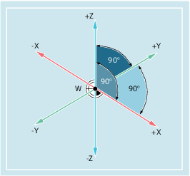

In order that the machine or the control can work with the positions specified in the NC program, these position specifications have to be made in a reference system that can be transferred to the directions of motion of the machine axes. For this purpose, a right-handed Cartesian (rectangular) coordinate system with the three main axes X, Y and Z is used. The position of the axis directions in such a workpiece coordinate system is defined by DIN 66217. The workpiece zero (W) is the origin of a workpiece coordinate system.
See also:
Workpiece coordinate system (WCS)